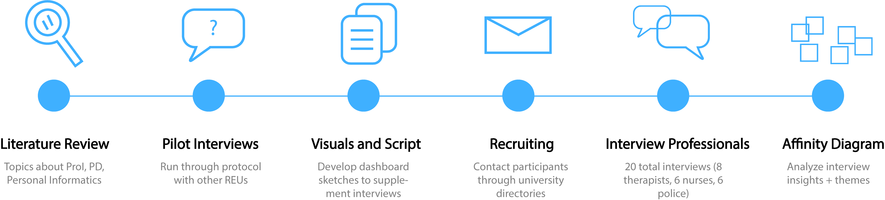

ClassInsight
a workplace Fitbit
Overview
Our project looks into the potential to reframe personal informatics as professional informatics (ProI). Building off the ClassInsight project, a ProI dashboard for classrooms, I conducted an interview study on a wider set of professional user groups (outside of just teachers) to confirm whether there is a need for this technology and consider how best to design towards their needs.
Summer 2020 (3 months)
Team
Individual Project
Skills
Qualitative analysis, interviewing
Context
Personal informatics are systems that collect and visualize personal data to help users reflect on their own behavior and set goals to improve. Popular examples include Fitbit, Apple Watch, etc. Our project looks into personal informatics for the workplace, ProI.
Prior research on ProI has only focused on singular case studies. ex: Automated measures of session quality for medical students or psychotherapists. However, we aimed to examine the broader implications of the concept of ProI, studying generalizations across different professions.
Goal: Is ProI useful/worth developing?
As a first step towards answering this larger question, our study focused on the following research questions about ProI:
- Can certain aspects be generalized across professions?
- What data is useful to collect?
- What are the opportunities and barriers?
Process
- Instrumented Space: workplaces with increasing amounts of technology being integrated
- Professional Development: jobs with agreed upon best practices/PD, so behaviors being measured can be identified and reveal measures of success

Results
Many saw ProI as a training opportunity for less experienced professionals Would allow beginners to gain efficiencies, measure and make progress through objective goal-setting Ex: Therapists review sessions with supervisor/peers in practicum setting, ProI could provide another data point for discussion Professionals were interested in their influence on others’ behavior Wanted to see whether their intuition matched the actual way they are perceived Objective way to reflect on the quality of client interactions A high area of interest was biometrics, stress-tracking Track times of the day/context in which they are stressed → develop interventions to improve their wellness Nurses and police both expressed they work in high stress environment Privacy concerns about data collection Privacy concerns depend on the nature of the work (public/private) Ex: Police work in the public sector, already monitored via body cams, so view this device as less intrusive to their work compared to therapists who work in a more sensitive, private environment Nurses and therapists stressed importance of required client consent
Through this interview study, we were able to find generalizations across different professions’ responses to ProI and gain a better understanding of user needs. Our research hopefully provides a basis for design guidelines for the development of future ProI technology.
Our next steps include writing down our findings in a research paper. Actions for future research include further exploring the insights from this study (conditions for usefulness, how to mitigate privacy concerns, implementing a prototype), as well as examining opportunities for ProI in other professions outside the three our study narrowed down on.